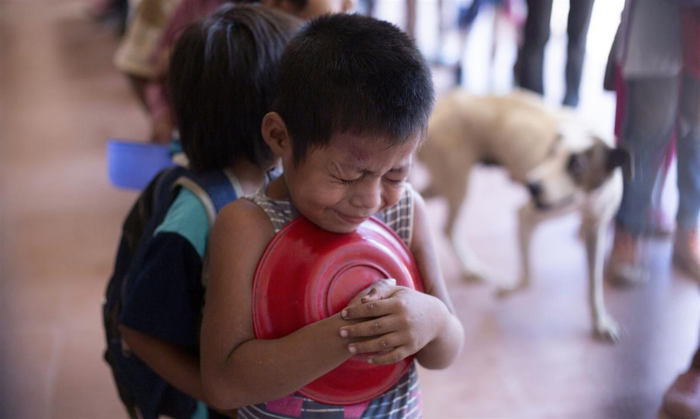
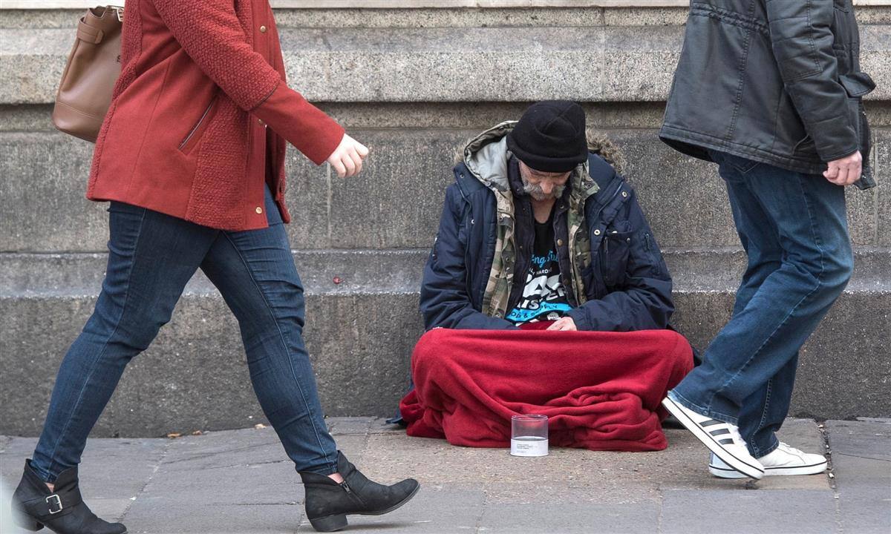

Rubbish pickers at the municipal site in Maputo, Mozambique. Photograph: Gianluigi Guercia/AFP/Getty Images
Rubbish pickers at the municipal site in Maputo, Mozambique. Photograph: Gianluigi Guercia/AFP/Getty Images
The pursuit of rapid growth won’t solve the huge challenges we face. A more honest, humane approach is the answer
• Esther Duflo and Abhijit Banerjee are joint winners of the 2019 Nobel prize in economic sciences
In 2017, a poll in the UK asked: “Whose opinion do you trust the most when they talk about their field of expertise?” Nurses came first – 84% trust them. Politicians came last. Economists were second from bottom on 25%.This trust deficit is mirrored by the fact that the consensus of economists (when it exists) is often systematically different from the views of ordinary citizens. The Booth School of Business at the University of Chicago regularly asks a group of about 40 prominent academic economists their views on core economic topics. Working with the economist Stefanie Stantcheva, we ran a survey: we selected 10 of the questions that were asked of the Booth panel and put them to 10,000 Americans.
On most of these issues, our respondents were sharply at odds with economists. For example, every single member of the Booth panel disagreed with the proposition that “imposing new US tariffs on steel and aluminium will improve Americans’ wellbeing”. Only a third of our respondents shared their view. And the gap is not only because people are not informed of what economists think: telling them does not seem to change their opinion one bit.
Economists are often too wrapped up in models and methods, and sometimes forget where science ends and ideology begins
This is troubling, because questions of economics and economic policy are central to the present crisis. Is migration actually threatening the livelihoods of poor workers? Has international trade worsened inequality? Should we worry about the rise of artificial intelligence or celebrate it? Why are our societies becoming increasingly unequal, and what can we (or should we) do about it? How can society help all those people whom the markets leave behind?
Economists have a lot to say about these big issues: they study immigration to see what it does to wages, taxation to determine if it discourages enterprise, redistribution through social programmes to figure out whether it encourages sloth. They have long worried about what happens when nations trade. They have worked hard to understand why some countries grow and others don’t, and what, if anything, governments can do to help. They gather data on what makes people generous or wary, what makes a man leave home and migrate to a strange place, how social media plays on our prejudices. The most recent research often has surprising things to say about all these issues – especially to those used to the pat answers coming from old high school textbooks and TV “economists”.
It’s not that when economists and the public have different views the economists are always right. We, the economists, are often too wrapped up in our models and methods and sometimes forget where science ends and ideology begins. But good economics can be a source of hope – a way to understand what went wrong but also to explain how our world can be put back together, as long as we are honest in our diagnosis of the problems.

‘How can society help all those people whom the markets leave behind?’ A child wait for a plate of food at a soup kitchen in Salta province, Argentina. Photograph: Javier Corbalan/APFor that to happen, we need to understand what undermines trust in economists. Part of the problem is that there is plenty of bad economics around. The self-proclaimed economists on TV and in the press – chief economist of Bank X or Firm Y – are, with important exceptions, primarily spokespeople for their firms’ economic interests, who often feel free to ignore the weight of the evidence. Moreover, they have a relatively predictable slant towards market optimism at all costs, which is what the public associates with economists in general. It does not help that there is a class of economists who make predictions about broad trends in the economy, which often turn out to be wrong.
Another part of the problem is that, especially in the UK and the US, a lot of the economics that has filtered into government thinking is the most beholden to orthodoxy, and the least able to pay attention to any fact that does not square with it. Economists are therefore naturally seen as those who keep repeating that regulations, taxes, and public spending all need to be slashed to let the market be, and that eventually everything will all “trickle down” to the poor, even as we watch inequality exploding.
But good economics is much less strident, and quite different. It is less like the hard sciences and more like engineering or plumbing: it breaks big problems into manageable chunks and tries to solve them with a pragmatic approach – a combination of intuition and theory, trial and acknowledged errors. Good economics starts with some facts that are troubling, makes some guesses based on what we already know about human behaviour and theories that have been shown to work, uses data to test those guesses, refines (or radically alters) its line of attack based on the new set of facts and, eventually, with some luck, gets to a solution.
We have spent our careers studying the poor, trying to apply this kind of experimental approach to the problems they face. Instead of relying on our intuition, or that of others, we set up large-scale, rigorous randomised controlled trials to understand what works, what does not work, and why. We are not alone: this movement has taken hold in economics. The Abdul Latif Jameel Poverty Action Lab (J-PAL), the network we co-founded in 2013, has 400 affiliated or invited researchers, and together they have finished or are working on nearly a thousand projects on topics as different as the impact of sleep on productivity and happiness, and the role of incentives for tax collectors.

‘Economists have a tendency to adopt a notion of wellbeing that is often too narrow – some version of income or material consumption.’ A homeless man outside Victoria Station in London. Photograph: Victoria Jones/PAThis work is starting to make a difference. To date, 400 million people have been touched by policies that J-PAL affiliates have shown to be effective. Just as importantly, although no single project offers a definitive answer, together they allow us to understand much better some of the mechanisms behind the persistence of poverty. While our own beat has mostly been the poor countries, there are many others doing good economics in countries like the US, which can help shed light on the big issues our societies are grappling with.
Economists have a tendency to adopt a notion of wellbeing that is often too narrow – some version of income or material consumption. Yet we know in our guts that a fulfilling life needs much more than that: the respect of the community, the comforts of family and friends, dignity, lightness, pleasure. The focus on income alone is not just a convenient shortcut – it is a distorting lens that has often led the smartest economists down the wrong path, and policymakers to the wrong decisions. This is a big part of what persuades so many of us that the whole world is waiting at the door to steal our well-paying jobs. It is what has led to a single-minded focus on restoring the western nations to some glorious past of rapid economic growth. It is also what makes the trade-off between the growth of the economy and the survival of the planet seem so stark.
A better conversation must start by acknowledging the deep human desire for dignity and human contact – and treating it not as a distraction but as a better way to understand each other, and to set ourselves free from what may appear to be unresolvable contradictions.
Restoring human dignity to its central place has the potential to set off a profound rethinking of economic priorities and the ways in which societies care for their members, particularly when they are in need. At the very least, this should help persuade some of the disaffected that economics is about them as well, and that we economists have useful contributions to make to the rebuilding that must happen.
• Esther Duflo and Abhijit Banerjee are joint winners of the 2019 Nobel prize in economic sciences and the authors of Good Economics for Hard Times: Better Answers to Our Biggest Problems, published by Allen Lane
SOURCE: THE GUARDIAN